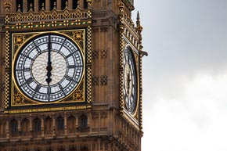
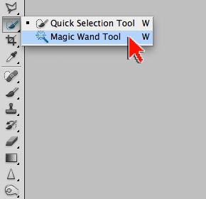
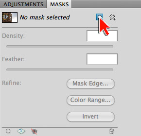
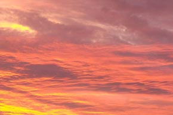
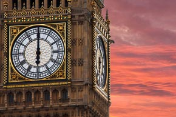
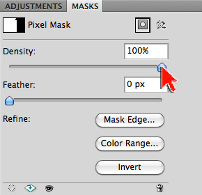
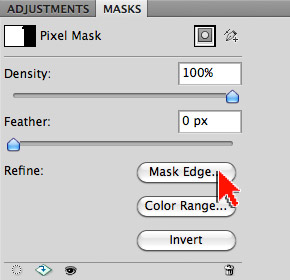
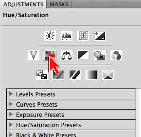
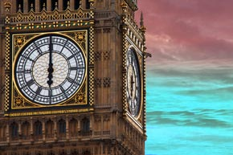

Exercise 1: Masking with a Selection
This exercise is based on a creative vision. A very common Photoshop task is to hide part of one image with a mask so that part of another image can be seen in its place. In this exercise we'll hide the dull grey sky next to Big Ben allowing for a warm topical sunset to shine through. A Big Ben make-over of sorts.
You will know how to:
- Create a mask based on a selection
- Invert a mask
- Adjust mask density (strength)
- Adjust mask feathering (softness)
- Refine a mask edge (fine-tune)
- and mask the effect of an adjustment layer
1. Open the image to be masked ...
- Open big-ben.jpg in Adobe Photoshop (image right)
- Source (and thanks to): Time on Big Ben by Vera Kratochvil
- Tap the letter 'f' so you're working on a solid grey background
- Note: Tapping 'f' a second time gives you a black background
- Note: Tapping 'f' a third time takes you back to normal viewing mode
- From the Menu bar, go to File > Save As...
- Save your file as a .psd
- a .psd (Photoshop Document) will preserve ALL your layers and settings

2. Select the sky ...
- In the Tool bar, select the Magic Wand Tool (image right)
- In the Options bar, reset the Magic Wand Tool
- To reset a tool, right-click on the tool icon in Options bar (left end) and choose Reset Tool
- With the Magic Wand Tool, click the upper grey portion of the sky to to create an initial selection
- To select the remaining portions of the sky, hold down the SHIFT key
and click the un-selected areas- Note: When you hold the SHIFT key down, a little + is added to the Magic Wand cursor
- Note: If you need to start a new selection, from the Menu bar go to Select > Deselect
- When your final selection is in place, select the Move Tool from the Tool bar to avoid accidental selection or de-selection issues
- Reality check: This is a VERY easy selection exercise because 1.) Big Ben is a hard edge object and 2.) there is a clear difference in contrast between Big Ben and the sky

3. Mask and invert ...
- Open the MASKS panel
- Click the [Add a pixel mask] button (image right)
- Note: You have created a mask based on a selection
- Note: The mask created is doing the exact opposite of what we want (Big Ben is hidden - the sky is visible)
- In the MASKS panel, click the [Invert] button
- Note: The mask is now doing exactly what we want (Big Ben is visible - the sky hidden)
- Note: Transparency in Photoshop is represented as a checkerboard pattern
- DEMO: See what the mask looks like
- Save your file as a .psd
- Tap the letter 'f' until you return to normal screen mode

4. Open a second image ...
- Open sunset.jpg in Adobe Photoshop (image right)
- Source (and thanks to): Sunset by Patricia Crosstown

5. Move and re-stack ...
- With the Move Tool, drag the sunset.jpg on top of the big-ben.jpg
- Note: Adding SHIFT after you begin dragging, and letting SHIFT go after you drop, aligns the sunset.jpg to the center of big-ben.jpg
- Reality check: Pixel counts
- If necessary, use the Move Tool to align the two layers
- In the Layers Panel, drag the sunset layer below the Big Ben layer (image right)
- Save your file (download ZIPPED .psd of this step)
- Close the sunset.jpg image (do not save)
- Tap the letter 'f' so you're working on a solid grey background

6. Mask density and feather ...
- In the Layers Panel, select the mask attached to the Big Ben layer
- Note: There are 3 selectable thumbnails in the Layers panel
- Note: When masking it is critical to be aware of which thumbnail is selected. Many masking errors and issues result from a user being unaware of which thumbnail is highlighted in the Layers panel
- Open the MASKS panel
- Experiment with the Density slider (image right)
- The Density slider controls the strength of the mask
- A Density value of 0% (slider left) reveals the hidden sky
- Experiment with the Feather slider
- The Feather slider controls the softness of the mask edge
- Note: Big Ben is a hard edge object (not feathered)
- Demo: Feathering in action
- Return both sliders to the original values (Density 100%, Feather 0px)

7. Refine the mask edge ...
- Open the MASKS panel
- Click the [Mask Edge] button (image right)
- Note: Clicking the [Mask Edge] button opens the Refine Mask dialogue box where you can fine-tune your mask
- Note: The Refine Mask dialogue box is very useful and powerful. You should definitely learn more about this feature (study at home)
- Demo: Refine Edge
- In the Refine Mask dialogue box, set the following:
- View Mode: On Layers (so we can see changes happen to the image)
- Output: Layer Mask (so changes are applied to our mask)
- Select the Zoom Tool in the Refine Mask dialogue box
- Zoom into the ornate upper edge of Big Ben
- Note the fringe - we will eliminate this
- In the Edge Detection section:
- For Radius, increase this value slightly to 1px
- Note: By raising this value slightly you are asking Photoshop to go out in search of a better edge ... and it does
- Note: The mask edge of Big Ben was very close to correct - the Magic Wand Tool did a great initial job of helping us find the edge. Other masks might require a higher Radius value (more help from Photoshop) - for example, hair
- In the Adjust Edge section:
- Shift Edge: -35
- Note: This value should remove the leftover fringe as the mask edge shifts
- Save your file (download ZIPPED .psd of this step)

8. Adjust the sunset ...
- In the Layers Panel, select the sunset layer thumbnail
- Open the ADJUSTMENTS panel
- Click on the Create a new Hue/Saturation adjustment layer icon (image right)
- Note the effect: The adjustment layer was added above the sunset layer
- Note: Added layers always come in above the layer currently selected
- Note: Photoshop gives you a FREE mask when you add a fill or adjustment layer
- In the ADJUSTMENTS panel, experiment with the Hue, Saturation, and Lightness sliders
- Save your file (download ZIPPED .psd of this step)

9. Mask the sunset adjustment ...
- In the Layers Panel, select the mask attached to the Hue/Saturation adjustment layer
- Note: There are 5 selectable thumbnails in the Layers panel
- Note: When masking it is critical to be aware of which thumbnail is selected. Many masking errors and issues result from a user being unaware of which thumbnail is highlighted in the Layers panel
- Use the skills acquired in Exercise 2 to create a linear gradient from top to bottom on the Hue/Saturation mask
- In the ADJUSTMENTS panel, experiment with the Hue, Saturation, and Lightness sliders
- Save your file (download ZIPPED .psd of this step)
- Tap the letter 'f' until you return to normal screen mode
